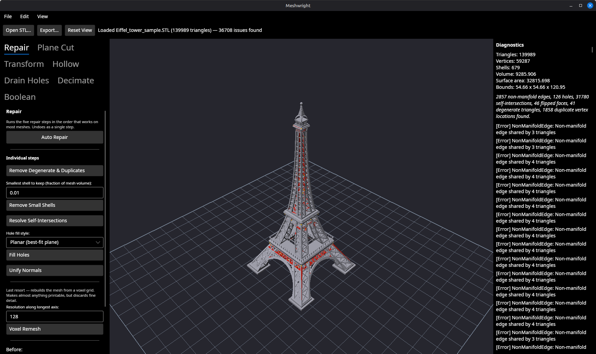
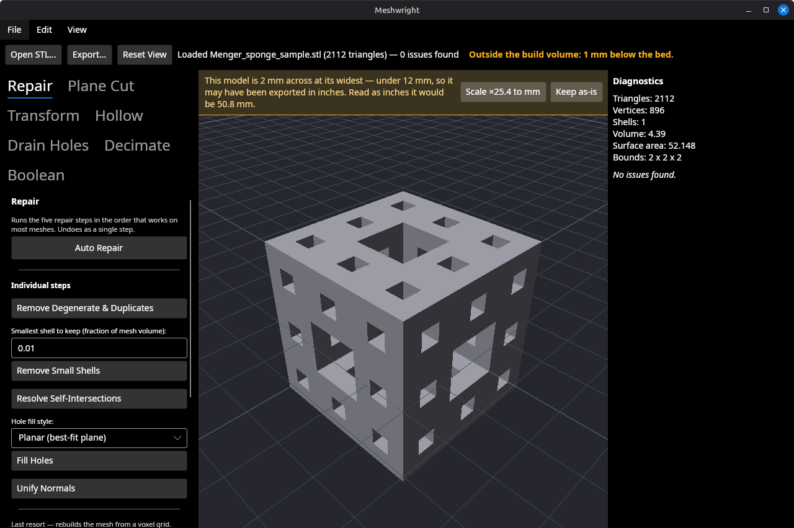
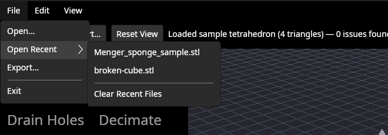

Fix a broken mesh. Get it printing.
Meshmixer was discontinued in 2021 and never replaced. Meshwright is a focused, cross-platform desktop tool that takes a mesh from "downloaded or scanned" to "ready to slice" — inspect, repair, and edit, with no account, no cloud, and no telemetry.

Why this exists
Meshmixer is still the tool recommended in 3D printing communities for repair, still distributed from an archive page, and increasingly broken on modern operating systems. Nothing has filled the gap.
| Tool | Why it doesn't fill the gap |
|---|---|
| Blender | An artist's tool with an artist's UI — repair needs add-ons and tribal knowledge. |
| Netfabb | Moved to Autodesk enterprise pricing, out of reach for makers and small shops. |
| MeshLab | Research-grade UI, unpredictable, no printing-oriented workflow. |
| Slicers | Excellent at slicing, deliberately don't repair or edit geometry beyond trivial cases. |
| Microsoft 3D Builder | Abandoned, Windows-only, very limited. |
- Not a CAD package
- Not a sculpting suite
- Not a slicer
What it does
The v1.0 scope, in short.
Inspect
Finds non-manifold edges, boundary holes, self-intersections, flipped normals, degenerate triangles, duplicate vertices, and stray shells — reported in plain language, not just an error count.
Repair
One-click Auto Repair, or run each step individually: hole filling, normal unification, small-shell removal, self-intersection resolution, and voxel remesh as a last-resort fallback.
Edit
Plane cut, boolean union/difference/intersection, transforms, hollowing to a wall thickness, and drain-hole placement. Splitting a model leaves two separate solids, exportable as one file per part, and a cut can add registration pins so the halves go back together aligned. Spatial parameters are set with a 3D gizmo in the viewport rather than typed as coordinates.
Simplify
Quadric edge-collapse decimation targeting a triangle count or percentage, with a live before/after count.
See it on the bed
Whether a model fits is a question about your printer, so the viewport answers it directly: it stands on a build plate sized to a real bed, and the status bar names any side the model hangs over and by how much.
Orthographic or perspective projection, seven view presets on
Ctrl+1–Ctrl+7, wireframe and x-ray for reading
tessellation, and a cross-section slider that opens the model along X, Y or
Z without cutting it — the way to check a hollow's wall thickness or
find a shell hiding inside a part.

Opening a file
An STL carries no units. A model drawn in inches and saved as STL loads 25.4× too small, and there is nothing in the file that says so.
Meshwright notices when a model is suspiciously small and asks. It never rescales anything on its own: quietly multiplying a model by 25.4 would look identical on screen and be discovered at the printer. The bar names both readings and the rule behind the question, doing nothing is the default, and accepting is undoable like every other change.

Bounds: 2 x 2 x 2.
Files you have opened before are in File → Open Recent,
and they are still there next launch — along with your printer bed and
the window's size and place, kept in
~/.config/meshwright/settings.json.

Where it stands
Inspect, repair, edit and simplify all work, and are covered by a test suite that runs on Linux, Windows and macOS. These are the gaps worth knowing about before you rely on it.
- No release yet. No tagged version and no packaged download — building from source is the only way to run it. Development happens on Linux; Windows and macOS builds pass CI but nobody has launched a packaged one.
- Drag-and-drop does not work on Linux. Avalonia's X11 backend has no drag-and-drop support at all, so a file dropped from a file manager never reaches the window. The handling is written and should work on Windows and macOS, but nobody has launched it there. Use
File → Open,File → Open Recent, or the command line. - STL and OBJ only. 3MF and PLY are not implemented.
- Still to come. A capped cross-section face, a headless batch mode, and a signed release.
The usage guide's known rough edges is the longer, franker list — including the places where an operation can surprise you.
Build from source
There are no packaged downloads yet. With the .NET SDK installed, a working build is three commands away.
sudo apt install dotnet-sdk-10.0
git clone https://github.com/bjornhenneberg/meshwright.git
cd meshwright
dotnet run --project src/Meshwright.App
A packaged Linux .deb can be built locally with
scripts/package-linux.sh. Two small sample meshes — one
clean, one deliberately broken — live in samples/ if you
want something to try Inspect and Auto Repair on immediately.
Licensing plan
Open source core, paid convenience — prebuilt, signed binaries sold as
a one-time purchase, same binary as the free build, editing gated
behind a licence key. Inspection and diagnostics stay free always. The
specific permissive licence (MPL-2.0 vs. Apache-2.0) is not settled —
check the repository's LICENSE file before relying on it.